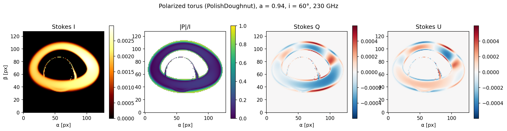

BlackLightPlus
GPU-accelerated general-relativistic ray tracing and fully polarized radiative transfer in arbitrary spacetimes, written in Julia.
A single code path renders images from analytic metrics, superposed Kerr–Schild binaries, and numerical-relativity spacetimes, on CPU and GPU, with automatic differentiation through the entire pipeline.

Capabilities
- Geodesics — Hamiltonian null geodesics in covariant-momentum form ($p_t$ conserved exactly for stationary metrics); adaptive high-order and fixed-step integration; an exact-Kerr elliptic fast path with lensing bands.
- Arbitrary spacetimes — any analytic metric via automatic differentiation; superposed Kerr–Schild binary black holes; ADM grid spacetimes with AD-through-interpolation derivatives; real numerical-relativity data (AthenaK Z4c
.bin, including BBH mergers). - Radiative transfer — full IQUV polarized transport via the coherency tensor; thermal, power-law, and kappa synchrotron emission and absorption; Faraday rotation and conversion; $R_\mathrm{high}/R_\mathrm{low}$ electron temperature prescriptions.
- GPU — fused single-kernel imaging with geodesic integration, fluid sampling, and radiative transfer all on device; polarized GPU transport that is bit-for-bit identical to the CPU march; native AMR meshblock sampling; multi-GPU.
- Differentiability — forward AD (ForwardDiff, including inside GPU kernels) and reverse AD (Enzyme) through the radiation chain, for gradient-based inference on black-hole and plasma parameters.
- Monte Carlo spectra — grmonty-scheme Compton-scattering spectral synthesis with a counter-based Philox RNG, on CPU and GPU.
Where to go next
| If you want to | Read |
|---|---|
| Render your first image in five minutes | Getting Started |
| Image a GRMHD snapshot | Imaging GRMHD data |
| Use a binary or numerical-relativity spacetime | Numerical-relativity and binary spacetimes |
| Run on GPUs | GPU rendering |
| Compute Compton spectra | Monte Carlo spectra |
| Understand the physics and numerics | Method |
| See measured performance | Benchmarks |
| Look up a function | API Overview |
Citing
A method paper is in preparation. Until it appears, please cite the repository directly — see CITATION.cff.
License
MIT. Third-party provenance — the AART-derived files' MIT notices and clean-room statements for GPL-adjacent algorithms — is recorded in NOTICE.